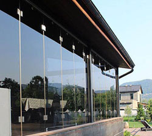

В закрытом положении безрамная система остекления надежно защищает балкон от ветра и дождя, а уровень шума в помещении снижается на 15-20 дБ..
Снаружи между стеклянной створкой и алюминиевым профилем проложены силиконовые уплотнители, которые защищают балкон от влаги и атмосферных осадков. Щели между створками и боковыми стенами балкона заполняют герметиком, а стекольные створки и алюминиевые профили скреплены между собой полиуретановым клеем.
ПРЕИМУЩЕСТВА БЕЗРАМНОГО ОСТЕКЛЕНИЯ
- На сегодняшний день это самое элегантное остекление.
- Система создает красивый внешний вид на балконе.
- Максимальное светопропускание — суть безрамного остекления.
- Обеспечивает панорамный обзор с балкона, и избавляют фасад дома от навязчивых рамных переплетов.
- Система безрамного остекления позволяет четыре сезона в году пользоваться помещением.
- Имеется возможность сдвинуть все створки в сторону и полностью раскрыть проем балкона.
- Безрамная система остекления выполнена с применением закаленного, особо прочного стекла.
- Зрительно увеличивает пространство балкона или лоджии, украшая при этом фасад здания, поскольку практически не видна даже в закрытом состоянии.
- В закрытом положении безрамная система остекления надежно защищает балкон от ветра и дождя, а уровень шума в помещениях, примыкающих к лоджии, снижается на 15-20 дБ.
- Упругие уплотнения из прозрачного полимера изолируют щели между створками и не нарушают прозрачности всей конструкции. В открытом состоянии створки занимают мало места и надежно зафиксированы.